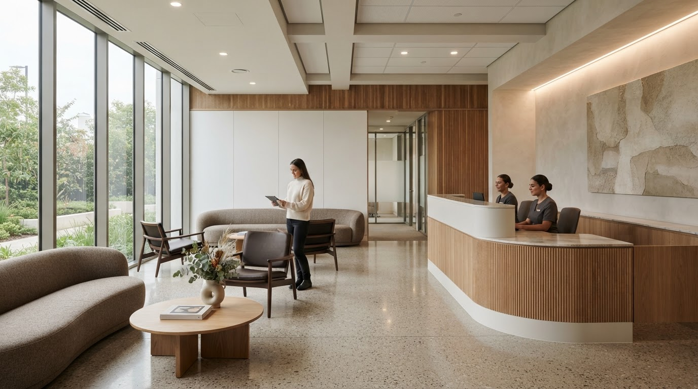
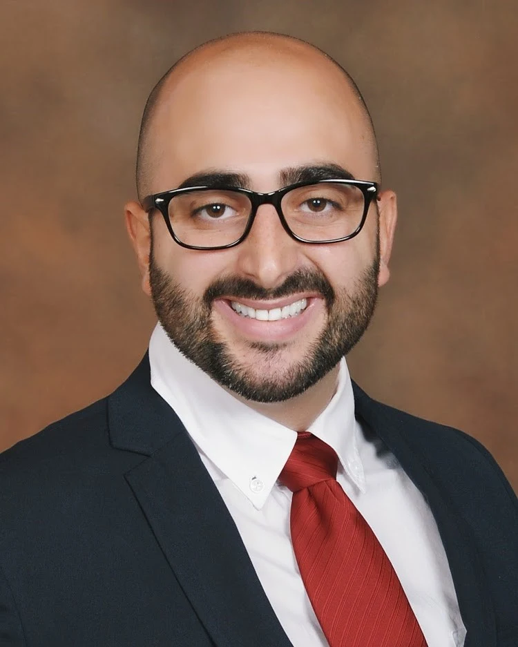
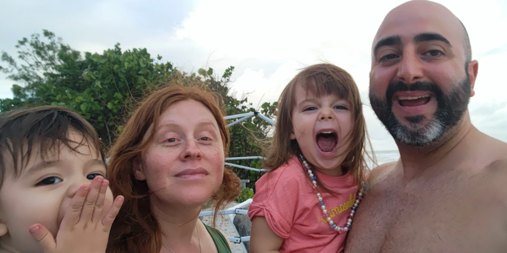

Primary Care
Comprehensive wellness exams, preventive screenings, and management of chronic conditions like diabetes, hypertension, asthma, COPD, and thyroid disease.

Hablamos Español·Family-Owned Clinic
Gutierrez Medical Centers is a family-owned clinic in Henderson, NV offering primary care, weight loss, hormone therapy, behavioral health, pediatric and geriatric care — for every member of your family, at every stage of life.
2920 N Green Valley Pkwy, Bld 2, Ste 217, Henderson, NV 89014
What We Offer
From preventive wellness to pediatric and senior care and everything in between — our services are designed to keep your entire family healthy and thriving.
Comprehensive wellness exams, preventive screenings, and management of chronic conditions like diabetes, hypertension, asthma, COPD, and thyroid disease.
Physician-supervised weight management programs tailored to your body, your goals, and your lifestyle for lasting, healthy results.
Restore balance and vitality with customized HRT plans designed to address fatigue, mood changes, and hormonal imbalances.
Compassionate mental health support and treatment — because emotional wellbeing is just as important as physical health.
Specialized care for our senior patients, focused on maintaining independence, managing chronic conditions, and enhancing quality of life.
Gentle, attentive care for children and teens — well-child visits, school physicals, and sick visits for the youngest members of your family.
See Dr. G from home with secure video visits — convenient follow-ups, medication checks, and consultations without the trip to the office.
Care for injured federal workers under Department of Labor OWCP programs, including recertifications and home visits.
About Us · Hablamos Español
Gutierrez Medical Centers is a family-owned practice in the heart of Henderson, Nevada. What began as one physician's vision for personalized, accessible healthcare has grown into a trusted clinic serving families across the Las Vegas valley.
We offer primary care and a wide range of services under one roof — from weight loss and hormone therapy to behavioral health, pediatric, and geriatric care. Because we know that great healthcare means being there for every member of your family, at every stage of life.
Family-owned and operated clinic
Care for the entire family — kids to seniors
Accepting most major insurance plans
Same-day and next-day appointments available
Hablamos Español — Atendemos a la comunidad hispana con orgullo y dedicación.

Meet Your Physician
Dr. G was born in Havana, Cuba, and immigrated to the United States in 1999 at the age of 12. He earned his Bachelor of Science in Physiology from the University of Arizona, along with dual associate degrees in Psychology and Chemistry. He went on to complete his medical degree at the Universidad Autónoma de Guadalajara and finished his residency training in Family Medicine at Southern Hills Hospital in Las Vegas, Nevada.
Throughout his career, Dr. G has served in a variety of healthcare settings across the greater Las Vegas area, bringing a wealth of experience and a deep commitment to the community he calls home. He is board-certified, bilingual in English and Spanish, and currently accepting new patients.
Immigrated to the United States in 1999 at the age of 12
B.S. in Physiology; dual associate degrees in Psychology & Chemistry
Doctor of Medicine
Residency in Family Medicine
Professional Experience

Beyond the clinic: Outside of his medical practice, Dr. G enjoys spending quality time with his wife, Sandra, and their three young children. Together, they enjoy hiking, gardening, cooking, and the occasional video game session.
Insurance & Payment
Gutierrez Medical Centers accepts most major insurance plans, including the carriers below. You can also verify your coverage online through our patient portal before your visit.
Don't see your plan? Call us at (702) 909-8196 and we'll verify your coverage.
Patient Portal
Manage your care entirely online through healow — schedule visits, view labs, message your provider, check insurance, and pay bills, all from one secure portal.
Book appointments directly through healow — no phone calls, no waiting on hold.
Access your lab results securely the moment they're available, right from your portal.
Send a secure message directly to Dr. G with questions or updates — anytime.
Check your coverage and benefits online before your visit, with no surprises.
Pay for services securely through your patient portal — fast, easy, and paperless.
One login for everything — your health records, messages, appointments, and bills.
Patient Stories
Real experiences from the families and individuals who trust us with their care.
"Dr. Gutierrez and his team made me feel like more than just a patient number. The attention to detail and genuine care is something I've never experienced at any other medical office."
"I was able to get a same-day appointment when I was feeling terrible. The staff was warm, efficient, and the doctor took the time to explain everything thoroughly. Highly recommend."
"After years of searching for the right primary care physician, I finally found Gutierrez Medical Centers. The facility is beautiful, clean, and the level of care is truly exceptional."
Common Questions
Answers about appointments, insurance, and what to expect at Gutierrez Medical Centers.
You can book online anytime through our healow scheduling page, or call the office at (702) 909-8196. Same-day and next-day appointments are often available.
We accept most major plans, including Aetna, Cigna, Medicaid, Medicare, Molina Healthcare, Redirect Health, UnitedHealthcare (including PPO), and DOL/OWCP federal workers' compensation. Call (702) 909-8196 to verify your specific coverage before your visit.
We provide primary care, medical weight loss, hormone replacement therapy, behavioral health, geriatric care, pediatric care, telemedicine visits, and DOL/OWCP work injury care — comprehensive family medicine for kids through seniors, all under one roof.
Yes — Dr. Gutierrez offers secure video visits for follow-ups, medication checks, and consultations, so you can be seen from home when an office visit isn't necessary.
We are located at 2920 N Green Valley Pkwy, Bld 2, Ste 217, Henderson, NV 89014, serving Henderson and the greater Las Vegas valley. Office hours are Monday through Friday, 8am to 5pm.
Yes — hablamos español. Dr. Gutierrez and the team proudly serve the Hispanic community in both English and Spanish.
Yes, Dr. Manuel Gutierrez Jr, MD is accepting new patients of all ages. Book your first visit online through healow or call the office to get started.
Get In Touch
Whether you're a new patient or returning, we're here to help. Book online through healow, call, or send us a message and let us take care of you.